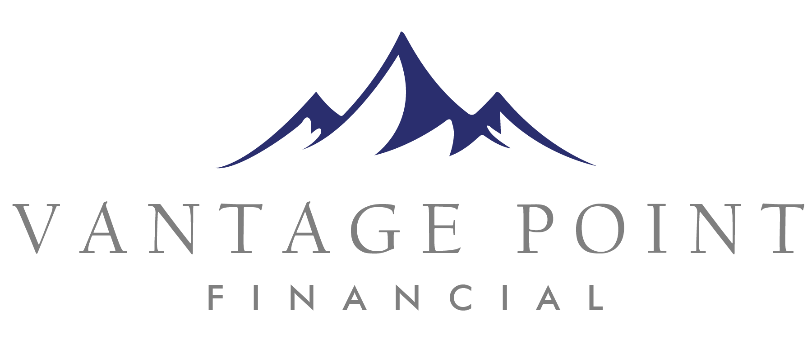

Lead Advisor or Partner
Leads the relationship, guides the Experience, closes business, develops referrals, and mentors the advisory team.

The Vantage Point Career Path
Two distinct tracks, one shared standard. The advisor track climbs toward relationship ownership and Partner. The planning track is a respected specialist career in its own right — no one is forced up a ladder they don't want.
What the path stands for
Advisor and planning specialist advance side by side, with their own runways.
Every seat connects to the Vantage Point Experience and the Elevated Retirement Plan.
A full, successful career is possible without climbing to Partner.
Promotion follows competency and behavior — not tenure alone.
Client delivery
Lead Advisors own relationships. Second Chair Advisors project-manage every household they sit on — coordinating tasks, follow-up, and service-team handoffs across the client experience. Households over $1M in assets are served by a two-chair team; relationships under $1M are led by a single advisor.
Leads the relationship, guides the Experience, closes business, develops referrals, and mentors the advisory team.
The household project manager — coordinating tasks, follow-up, CSA handoffs, and service-team execution.
Builds the technical planning work behind the Elevated Retirement Plan and protects delivery consistency.
Promotion framework
Competency now folds in technical delivery, role execution, and sales goals for the roles where selling is part of the job.
Scorecards & KPIs · Internal
Working targets. These become role-level scorecards once leadership confirms thresholds, data sources, and review cadence.
Restricted · Internal
Philosophy and mechanics are shared internally; advisor-specific salary, variable comp, and profit participation stay limited to approved leadership and the individual advisor.
Base creates stability, variable rewards growth, and the profit stake reinforces firm-first behavior.
Successful Lead Advisors may move off salary into a higher percentage of variable compensation.
Workbook notes point to preserving at least 25% profit after expenses and bonus compensation.
All figures are placeholders pending leadership confirmation.
For candidates
See exactly what the next seat requires and how responsibilities grow over time.
Clients are served by a firm, not an individual. You develop through live two-chair work.
A respected specialist path for technical talent — no forced move into sales leadership.
Growth, Ownership, Teamwork, Client Obsession, Community Impact, and Leadership shape promotions.
Work in process · Internal
The remaining inputs that turn this from a strong draft into a governed operating system.